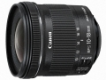
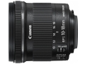

器材库 > APS画幅镜头 > EF-S 10-18/4.5-5.6 IS STM

详细规格
镜头类型
广角变焦镜头
发布日期
2014-05-13
焦距
10mm-18mm
等效35mm画幅焦距
16mm-29mm
最大光圈
f/4.5-5.6
最小光圈
f/22-29
视角（对角）
107°30‘ - 74°20’
视角（水平）
97°10‘ - 64°30’
视角（垂直）
74°10‘ - 45°30’
镜头结构
14片/11组
非球面镜片
2片
低/超低色散镜片
1片
光圈叶片
7片
最近对焦距离
22cm
最大放大倍率
0.15倍
驱动马达
STM
滤镜口径
67mm
镜头卡口
Canon EF
防抖
是
颜色
黑色
尺寸
74.6×72mm
重量
240g
备注
后对焦；全时手动对焦。
suixz2017-12-09 17:573.67 分
操作性 2.50耐用性 3.00性价比 5.00解像力 4.50色彩还原 4.00机械结构 3.00
dc08112017-08-16 15:454.67 分
操作性 5.00耐用性 4.50性价比 5.00解像力 4.50色彩还原 4.50机械结构 4.50
fskevin2015-06-25 14:504.17 分
操作性 4.50耐用性 3.50性价比 5.00解像力 3.50色彩还原 4.50机械结构 4.00
小谦2015-05-14 20:254.5 分
操作性 4.50耐用性 4.50性价比 5.00解像力 4.50色彩还原 4.50机械结构 4.00
大家一起来爱护眼睛2015-05-05 18:164.67 分
操作性 5.00耐用性 4.50性价比 5.00解像力 4.50色彩还原 4.50机械结构 4.50
志诚堂2015-04-10 22:344.58 分
操作性 4.50耐用性 4.50性价比 5.00解像力 4.50色彩还原 4.50机械结构 4.50
浪仙2015-03-02 09:084.5 分
操作性 4.50耐用性 4.00性价比 5.00解像力 4.50色彩还原 4.50机械结构 4.50
浪仙2015-03-02 08:49
夜里出行的鱼2014-11-11 22:054.33 分
操作性 4.50耐用性 4.50性价比 5.00解像力 4.00色彩还原 4.00机械结构 4.00
xxt772014-07-25 19:414.67 分
操作性 5.00耐用性 4.00性价比 5.00解像力 4.50色彩还原 5.00机械结构 4.50
12315jc2014-05-15 19:113.67 分
操作性 4.00耐用性 3.50性价比 4.50解像力 3.00色彩还原 4.00机械结构 3.00
产品图 / 样片
EF-S 10-18/4.5-5.6 IS STM产品图

EF-S 10-18/4.5-5.6 IS STM产品图
评测 / 相关文章
- 详细内容 （存档）
- 高性价比半幅超广 佳能EF-S 10-18mm IS评测 （存档）
- ［试用］佳能EF-S 10-18开箱及不严谨测试、实拍 （存档）
- ［资讯］佳能EF-S 10-18 IS STM官方样张欣赏 （存档）